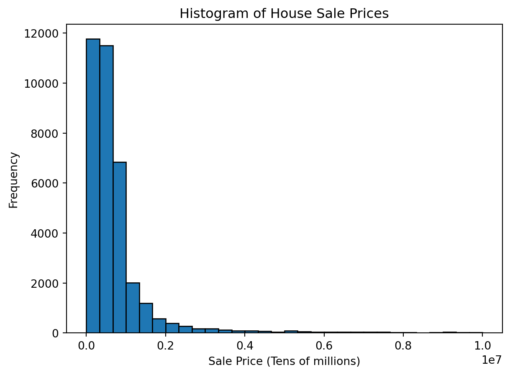

(84548, 22)
<class 'pandas.core.frame.DataFrame'>
RangeIndex: 84548 entries, 0 to 84547
Data columns (total 22 columns):
# Column Non-Null Count Dtype
--- ------ -------------- -----
0 Unnamed: 0 84548 non-null int64
1 BOROUGH 84548 non-null int64
2 NEIGHBORHOOD 84548 non-null object
3 BUILDING CLASS CATEGORY 84548 non-null object
4 TAX CLASS AT PRESENT 84548 non-null object
5 BLOCK 84548 non-null int64
6 LOT 84548 non-null int64
7 EASE-MENT 84548 non-null object
8 BUILDING CLASS AT PRESENT 84548 non-null object
9 ADDRESS 84548 non-null object
10 APARTMENT NUMBER 84548 non-null object
11 ZIP CODE 84548 non-null int64
12 RESIDENTIAL UNITS 84548 non-null int64
13 COMMERCIAL UNITS 84548 non-null int64
14 TOTAL UNITS 84548 non-null int64
15 LAND SQUARE FEET 84548 non-null object
16 GROSS SQUARE FEET 84548 non-null object
17 YEAR BUILT 84548 non-null int64
18 TAX CLASS AT TIME OF SALE 84548 non-null int64
19 BUILDING CLASS AT TIME OF SALE 84548 non-null object
20 SALE PRICE 84548 non-null object
21 SALE DATE 84548 non-null object
dtypes: int64(10), object(12)
memory usage: 14.2+ MB
NoneProperty Sales Price Prediction
Research Topic
We are analyzing a selling record dataset from the New York City property market, which includes annual selling records of single buildings or unit buildings from 2016 to 2017. We are going to analyze the different factors present in our dataset to predict the sales price of the building in New York City. The aim of this project is to find relations and patterns of sales price w.r.t. various other factors to have a clear understanding of property price in NYC, and hopefully will help property companies or citizens that has interest in purchasing property at New York to have a prospect for the NY property price trend in the future.
SMART Questions:
- What type(s) of location variable(s) (Eg. block, borough, neighborhood) will affect the selling price most? (can answer by modeling)
- How is the sale price of commercial property different from the sale price of residential property?
- How is accuracy different if different machine learning models like linear regression, logistic regression, and random forest are applied?
Importing Libraries
Importing Data
We imported the data about New York properties and checked its basic information
This dataset has 84,548 rows and 22 columns
Dataset Pre-Processing
Before we do the EDA and build models for this dataset, we need to clean the data first
Columns Manipulation
Changing Column’s Name
We changed the columns name into lower capital for better visualization and convenience.
<class 'pandas.core.frame.DataFrame'>
RangeIndex: 84548 entries, 0 to 84547
Data columns (total 22 columns):
# Column Non-Null Count Dtype
--- ------ -------------- -----
0 unnamed 84548 non-null int64
1 borough 84548 non-null int64
2 neighborhood 84548 non-null object
3 building_class_category 84548 non-null object
4 tax_class_at_present 84548 non-null object
5 block 84548 non-null int64
6 lot 84548 non-null int64
7 easement 84548 non-null object
8 building_class_at_present 84548 non-null object
9 address 84548 non-null object
10 apartment_number 84548 non-null object
11 zip_code 84548 non-null int64
12 residential_units 84548 non-null int64
13 commercial_units 84548 non-null int64
14 total_units 84548 non-null int64
15 land_square_feet 84548 non-null object
16 gross_square_feet 84548 non-null object
17 year_built 84548 non-null int64
18 tax_class_at_time_of_sale 84548 non-null int64
19 building_class_at_time_of_sale 84548 non-null object
20 sale_price 84548 non-null object
21 sale_date 84548 non-null object
dtypes: int64(10), object(12)
memory usage: 14.2+ MBChanging column’s data type
There are too many columns with inappropriate data type, so we need to convert them to the appropriate data type:
- We converted land and gross square feet, property sales price, the number of residential, commercial and total units into continous variables
- We converted variables that represent different locations like borough, neighborhood and zip code into categorical variable; we also converted variables represented different building categories, and different building tax categories into categorical variables
Creating Some New Features:
We created a new column for percentage of residential units
1.000000 57072
0.000000 5021
0.666667 908
0.500000 560
0.750000 232
...
0.991453 1
0.468750 1
0.986631 1
0.346154 1
0.940000 1
Name: percent_residential_units, Length: 180, dtype: int64We created another new column named ‘age’ by calculating the difference between the current year and the year it was built
Dropping Insignificant Columns
Based on the dataset information, we can see there’s an ambiguous column called ‘Unnamed’ that we don’t know what it’s used for, and another useless column ‘easement’ which has no value in its column for our analysis of sales price, so we decided to drop them first
Because we created a new feature called “age”, which is a better representation for the measure of a property’s history, so we can drop the column ‘year_built’
Lastly, we dropped some other columns too which had the same meaning as other columns.
Subsetting Out Inappropriate Values
Dropping duplicates
Removing data where commercial + residential doesn’t equal to total units
Removing rows with TOTAL UNITS == 0 and one outlier with 2261 units
Removing 0 square foot units
Dropping Null Values
After we finish the column manipulation, convert columns into appropriate data type, drop useless columns and create some new features, then we can drop the null or missing values in the whole dataset.
<class 'pandas.core.frame.DataFrame'>
Int64Index: 36420 entries, 0 to 84547
Data columns (total 18 columns):
# Column Non-Null Count Dtype
--- ------ -------------- -----
0 borough 36420 non-null category
1 neighborhood 36420 non-null category
2 building_class_category 36420 non-null category
3 block 36420 non-null int64
4 lot 36420 non-null int64
5 address 36420 non-null object
6 zip_code 36420 non-null category
7 residential_units 36420 non-null int64
8 commercial_units 36420 non-null int64
9 total_units 36420 non-null int64
10 land_square_feet 36420 non-null float64
11 gross_square_feet 36420 non-null float64
12 tax_class_at_time_of_sale 36420 non-null category
13 building_class_at_time_of_sale 36420 non-null category
14 sale_price 36420 non-null float64
15 sale_date 36420 non-null object
16 percent_residential_units 36420 non-null float64
17 age 36420 non-null int64
dtypes: category(6), float64(4), int64(6), object(2)
memory usage: 3.9+ MBExploratory Data Analysis (EDA) & Visualization
Correlation Matrix
C:\Users\LENOVO\AppData\Local\Temp\ipykernel_19468\3853464610.py:1: FutureWarning: The default value of numeric_only in DataFrame.corr is deprecated. In a future version, it will default to False. Select only valid columns or specify the value of numeric_only to silence this warning.
corr = data_few_cols.corr()- According to the correlation matrix, we can see gross_square_feet have the strongest positive correlation with the sales price.
Sales Prices Distribution
Only plotting values less than $10 million due to significant outliers (eg. 2.2 BILLION dollars)

- Most of the properties are selling below 0.2 millions dollar in New York from 2016 to 2017.
Different Districts Selling Prices

- From the plot we can see that Manhattan property price is much higher than the other boroughs, so Manhattan is the most expensive district in New York.
Violinplot for price and borough

- From the violinplot, we can see that Manhattan is much skinnier as compared to others but it stretches to higher sales price.
- Skinny plot represents that there is no specific price range in which Manhattan properties are getting sold.
- Rest all the boroughs are fatter in lower sales price region.
Plotting Square Footage for < 10k and those not equal to zero
- The right skewed histogram indicating there are less values in upper end of the gross_square_feet.
Square Footage and Sale Price

- The data points are very scattered are not aligning very well with the straight line.
Age and Sale Price
- The data points are very scattered are not aligning very well with the straight line.
Total Units and Sale Price

- We can see that there is a linear relation of total_units but it is not very clear as there are a lot of outliers.
Selling Price at Different Tax Classes

- This plot gives valuable insights with respect to different tax classes. Properties with tax class 4 has the highest selling price.
Distribution of Percent Residential Units
Not very informative but interesting as most buildings are 100% residential.

Model Building
We are going to build 4 models for predicting the sales_price of New York property, which are:
- Linear Regression
- Decision Tree
- Random Forest
- K-NN
The variables we are going to use are:
borough, building_class_category, zip_codes, total_units, percent_residential_units, age, gross_square_feet, tax_class_at_time_of_sale, building_class_at_time_of_sale, and sale_price as the response variable.
The variables we don’t use:
We didn’t use Neighborhood, block, lot and address because they have the similar information as zip_codes and borough, and we think zip_codes and borough can provide better information on location.
We didn’t use land_square_feet because we decided to use gross_sqaure_feet as a better variable for measuring the area.
Removing Outliers
Because in the EDA Section, we’ve already seen our response variable sale_price is highly right skewed, so before we build the models, we have to remove the outliers or the model will be meaningless.
We defined a function for detecting outliers, of which setting our outliers quantile below 25% and over 75%.
Number of outliers: 2743Define another function for removing outliers for dataframe.
Shape of our final cleaned dataframe is: (25744, 18)
<class 'pandas.core.frame.DataFrame'>
Int64Index: 25744 entries, 222 to 84547
Data columns (total 18 columns):
# Column Non-Null Count Dtype
--- ------ -------------- -----
0 borough 25744 non-null category
1 neighborhood 25744 non-null category
2 building_class_category 25744 non-null category
3 block 25744 non-null int64
4 lot 25744 non-null int64
5 address 25744 non-null object
6 zip_code 25744 non-null category
7 residential_units 25744 non-null int64
8 commercial_units 25744 non-null int64
9 total_units 25744 non-null int64
10 land_square_feet 25744 non-null float64
11 gross_square_feet 25744 non-null float64
12 tax_class_at_time_of_sale 25744 non-null category
13 building_class_at_time_of_sale 25744 non-null category
14 sale_price 25744 non-null float64
15 sale_date 25744 non-null object
16 percent_residential_units 25744 non-null float64
17 age 25744 non-null int64
dtypes: category(6), float64(4), int64(6), object(2)
memory usage: 2.8+ MB
Basic info of our final cleand dataframe:
NoneCheck the distribution of the response again.

Much cleaner plot, although not exactly normal distribution but very close to normal distribution.
Train/Test Split
Before we starting to build the models, we need to split our cleaned dataframe into training set and testing set.
Also we transformed categorical variables using onehotencoding and scaled the variables using fit_transform() function.
(29136, 351)
(7284, 351)
(29136,)
(7284,)Linear Regression
We build the linear regression with the regressors we mentioned above at first, then we got a fitting result with 48% R-Squared value, which is not a really bad score. However, we want to make sure this is a useful model (predicting useful results), so we also need to check the model assumptions.
Normally shaped response: Because we defined two functions to remove the outliers for our response variable sale_price in the Pre-processing section and checked its distribution on the EDA section, which is approximately normally distributed so we don’t have the problem of skewed response
Multicollinearity: We checked the VIF values for our regressors, and we found zip_code and percentage_residential_units have extremly high VIF values (about 176 and 89 subsequently), which means we have a serious problem of multicollinearity and this can make our model prediction useless, so we removed these two regressors and checked the VIF values again and finally get every VIF values in an acceptable range (below 10)
Linearity: We checked the scatter plot between the response variable sale_price and three continuous regressors in our model structure, which are total_units, Age, and gross_square_feet. We found a clear linear relationship between property’s sales price with total units and square footage, however, we can’t see a clear linear relation between property’s sales price and property’s age. Thus firstly we decided to romove regressor Age, but this can’t increase other evaluation values, instead, it dropped our R-Squared values about 2% down, so finally we decided to keep it After we finish these checkings we build our model again with the remaining regressors: age, total_units, gross_square_feet, borough, tax_class_at_time_of_sale, building_class_at_time_of_sale, and also added two more interaction terms.

The residual plots for our final model looks acceptable.
R_squared value: 0.19761049879587889
adjusted R_squared value: 0.195360019886343The final linear model R-Squared value has dropped to 19.8%, which is definitely not acceptable for predicting a marketing continuous data like property sales price. Moreover, we can’t see the AIC and BIC change a lot compare with our previous model, which is also extremely high.
Thus, finally we concluded that:
- Though we have some significant coefficients in our fitting summary, the response variable sale_price can be hardly explained with this model structure by using Linear Regression, and we will keep trying other types of models.
Decision Tree

- On checking R squared value for different depths of tree, accuracy fluctuated a lot and not giving a pattern. So no judgement can given by the decision tree regressor for our dataset.
Random Forest
Random forest being a very strong modeling technique, gave better results than the previous models.
We tried to run random forest using different permutations and combinations of hyperparameters.
The best score model is as following
Training score: 0.6440346429343455
Testing score: 0.2890256072033246We got the score of around 29% which is not good enough for sales price prediction but it is better than the previous techniques.
K-Nearest Neighbor
As per professor’s feedback on our presentation, we tried K-Nearest Neighbor algorithm.
Since, real estate brokers, agents, and people who want to buy a property knowingly or unknowingly follow K-NN approach to find the best property for them.
So, using this approach for sales price prediction models makes a huge difference.
Text(0, 0.5, 'score')
- From the plot, R-squared score is negative initially and increasing with increasing K value at around 35% score, score values is getting saturated.
- Best test score is achieved at K value of 23.
Score at k = 23: 0.37172987602193475- We got the maximum score of around 37% at the k value of 23.
CONCLUSION
- Sales price was highly dependent on location type variables like boroughs.
- Sales price was highly dependent on the gross_square_feet of the property.
- Sales price was highly dependent on the tax class of the property.
- Different models like linear regression, decision tree, random forest, and KNN gave different R squared score.
- K-Nearest Neighbor performed best on our dataset with an score of 37%.